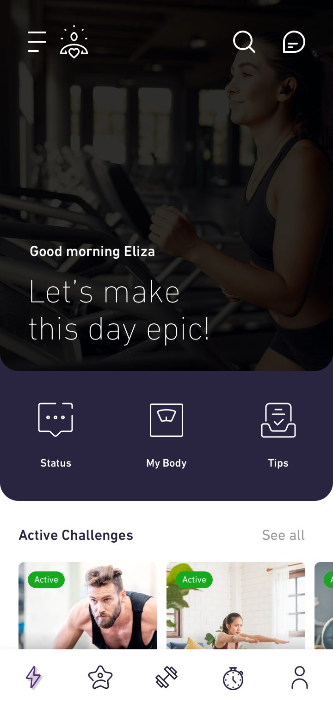
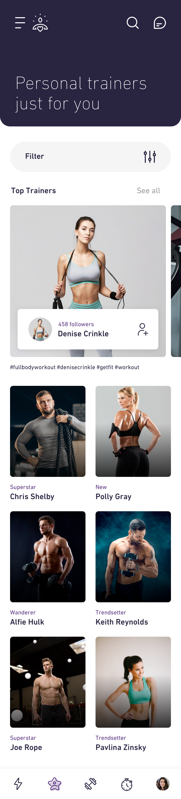

For this milestone we wanted to make sure that our assumptions were right, so we created a specific survey. The result can be accessed here.
Validation Survey
As can be seen from the questions asked, the validation process focused on the habits of the people and past experiences.
| Assumption | Validated |
| People follow online fitness videos | Yes (91.3%) |
| People follow an online training set scheduled on several days | No (52.2%) |
| People follow exercises from a certain personal trainer | No (56.5%) |
| People personalise their fitness trainings | Yes (52.2%) |
| People watch live training sessions | No (82.6%) |
| Challenges are motivating people | Yes (87%) |
| People like timed competitions | No (87%) |
| People are following a strict training program | No (60.9%) |
| People are using the Chat feature from social media apps every day | Yes (56.5%) |
| PTs are motivated by money to work in a certain place | Yes (100%) |
| PTs are motivated by money to train people | No (100%) |
| PTs post fitness content on social media | Yes (66.7%) |
| PTs do live training sessions | No (66.7%) |
| PTs challenge their clients | Yes (100%) |
| PTs usually recommend their clients to vary their workouts | Yes (100%) |
| PTs are having a hard time following the client’s progress online | Yes (66.7%) |
| PTs use the Chat often when talking to their clients online | Yes (66.7%) |
Feature List
The features that we believe will give enough value for the people to use it, despite other similar apps, are:
- training packages
- fitness challenges
- fitness oriented chat
- live video training sessions
- people can hire a personal trainer from the app
- trainers can earn money for their fitness services
- trainers can easily follow the progress of their clients
We also create a more complex description of each feature and how they all interact in the document from here.
MVP
For the actual design, we added a lot of differences from the mock-up, to accommodate the real life user experience and the validated assumptions.
Right after the user downloads the app, there will be 3 splash screens, to set the tone of the app:
The Home page remains the page with all the training packs, and it looks like this:

As it can be seen, the bottom buttons changed slightly, to increase the usability. The bottom navigation offers:
The Inspiration page
Is the main page of the app. The brief functionalities accessible from here are:
- active challenges
- training packs
- top trainers
- search tab
- chat
- activity zone, to receive notifications of workouts, challenges or recommendations
As hiring a personal trainer is a big part of the app, the top trainers have a section on this page, so it can be easily found. Also, we value the importance of challenges, so we kept the challenge section on this page.
The simplified look of the packages give the whole app a clean look, so users can focus on the quality of the presentation pictures and content.
We added an activity zone because as this is the main screen, so all the important elements should be here. In this way, the user will not miss any notifications. Also, the buffer zone helps navigate to the favourite zones faster.
The Personal Trainers page
As said before, finding a personal trainer is a strong pillar of this app, so we dedicated a whole navigation screen just for finding the best trainer for a user. The available features from here are:
- all trainers are listed here
- here are also all the top trainers
- can access a trainer’s profile
- can filter the search
- can directly follow a trainer

The Training Page
This page remains the training focus on this app. This is where the user achieves him or her training goals. All the physical activity will happen here. The available functionalities are:
- if the user has an ongoing training package, it can be started from here
- exercise recommendation will appear here
- customize schedule
As a difference from the mock-up is when opening a training pack, before buying. The user can see a list with all the headline exercises from a certain day, so he/she can anticipate what will be next. Also the user can try the first day for free, to help decide buying.
The Profile
This page was adjusted so that it would be more visually pleasing, so that it will contain a lot of information, without seeming crowded. Because the photos are more attractive than text, we chose to fill a great amount of the screen with the trainer’s photo.
- the basic profile contains public information about the user
- for trainers, the profile contains all the public training packs and challenges that they’ve made, along with trainer details (experience, certificates etc)
- from a trainer’s profile, a user can follow and/or hire
- there is a chat button that sends the user to the conversation with this trainer
- there are also search and share options
As the relevant information about the trainer we chose the experience, the number of trainees that hired the trainer and the number of certificates. We created the hire button as floating, so that it will be handy and not give the user too much time to think otherwise.
App Demo
Here you can see a little demo of how everything comes together right here: